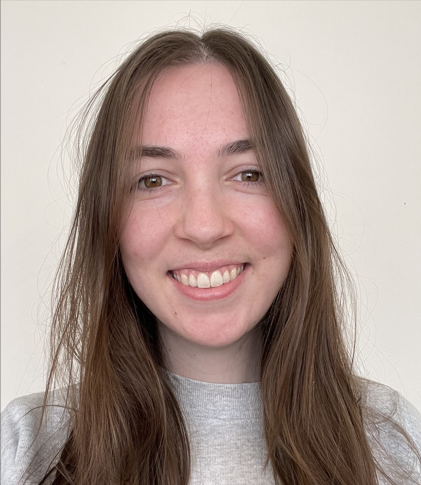

Weekly Help Sessions
We offer weekly help sessions every Tuesday from 1-2PM Eastern Standard Time. Each session typically includes
a 30-minute presentation, followed by an open Q&A session with presenters and guests.
Click the following link to open Zoom on your computer and join this week's session!
Upcoming Schedule
June 4th
Thanks to a recent publication by our collaborators at Wake Forest University, we'll be
discussing how flavanols protect tomato pollen from heat stress. You can
click here to
view the current PDF version of the article.
Special Guest: TBD
June 11th
CANCELLED
We'll be hosting a workshop at the 2024 Plant Biology (ASPB) conference at this time instead.
June 18th
In preparation for a talk at the 2024 Galaxy Community Conference (GCC2024), I'll be discussing IGB's
integration into Galaxy and how these tools can be used together to elicit meaningful results
from non-model and emerging model systems like that of the tardigrade.
Special Guest: TBD
June 25th
TBD
Special Guest: TBD
Meet Your Hosts
-

- Paige Kulzer (she/her), MSc
- Nowlan Freese (he/him), PhD
{kind=link}
Paige is a Bioinformatics Data Manager and Trainer at UNC Charlotte in the Department of Bioinformatics and Genomics. She develops outreach materials, such as workshops, presentations, and videos to teach students and researchers alike how to use the Integrated Genome Browser. Her unique background in conservation genetics and bioinformatics helps bridge the communication gap between scientists, developers, and the public.
{kind=link}
Nowlan is a Research Associate at UNC Charlotte in the Department of Bioinformatics and Genomics. Nowlan leads the Integrated Genome Browser project in the laboratory of Professor Ann Loraine, faculty in the Department of Bioinformatics and Genomics. Nowlan’s PhD was in developmental biology with a focus on identifying the causative mutation of sacral agenesis using GWAS and whole genome resequencing. He was the recipient of a National Science Foundation Postdoctoral Research Fellowship in Biology where he studied the role of splicing and methylation in abiotic stress.